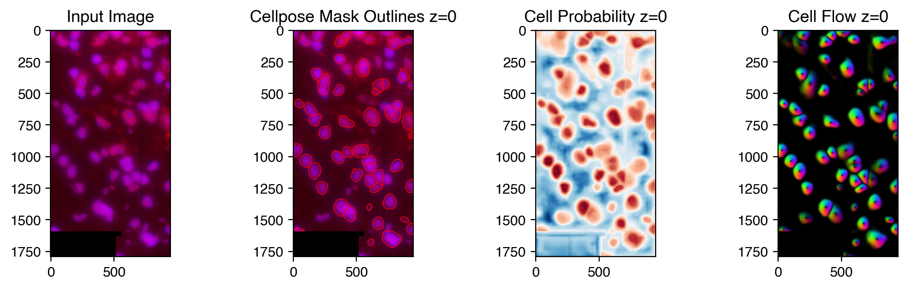
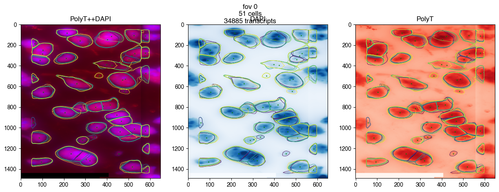

Cellpose Segmentation
Contents
5. Cellpose Segmentation#
from merfishing import Merfish
5.1. Entry Point#
merfish = Merfish('dummy_experiment/output/region_0/')
MERFISH Experiment Region
Region data located at /gale/netapp/cemba3c/merfish/example/dummy_experiment/output/region_0
Experiment dir located at /gale/netapp/cemba3c/merfish/example/dummy_experiment
Using cellpose results
5.2. Run Cellpose#
merfish.cell_segmentation(model_type='cyto',
diameter=100,
jobs=16,
padding=100,
verbose=False,
redo=False)
/gale/netapp/cemba3c/merfish/example/dummy_experiment/output/region_0 does not contain cellpose results or the results are incomplete, using watershed results from vizgen pipeline instead./gale/netapp/cemba3c/merfish/example/dummy_experiment/output/region_0 does not contain cellpose results or the results are incomplete, using watershed results from vizgen pipeline instead./gale/netapp/cemba3c/merfish/example/dummy_experiment/output/region_0 does not contain cellpose results or the results are incomplete, using watershed results from vizgen pipeline instead.
/gale/netapp/cemba3c/merfish/example/dummy_experiment/output/region_0 does not contain cellpose results or the results are incomplete, using watershed results from vizgen pipeline instead.
5.3. Run single cellpose#
from merfishing.tl.cellpose import run_cellpose
image = merfish.get_rgb_image('PolyT++DAPI', fov=0, projection=None)
# PolyT++DAPI means put PolyT in R channel (0) and DAPI in B channel (2)
# the image shape is (z, y, z, channel)
feature_mask, feature_meta = run_cellpose(image=image,
model_type='cyto',
diameter=100,
gpu=False,
channels=[[0, 2]],
channel_axis=3,
z_axis=0,
buffer_pixel_size=15,
plot=True)

5.4. Reopen Merfish Entry Point#
Cellpose based segmentation will be used as default automatically
merfish_new = Merfish('dummy_experiment/output/region_0/')
MERFISH Experiment Region
Region data located at /gale/netapp/cemba3c/merfish/example/dummy_experiment/output/region_0
Experiment dir located at /gale/netapp/cemba3c/merfish/example/dummy_experiment
Using cellpose results
fig = merfish_new.plot_fov(0, dpi=100)

merfish_old = Merfish('dummy_experiment/output/region_0/', cell_segmentation='watershed')
MERFISH Experiment Region
Region data located at /gale/netapp/cemba3c/merfish/example/dummy_experiment/output/region_0
Experiment dir located at /gale/netapp/cemba3c/merfish/example/dummy_experiment
fig = merfish_old.plot_fov(0, dpi=100)
5.5. Details - Cellpose2#
Cell segmentation is done by the cellpose2 package with its pretrained model. Each z-plane is run separately, segmenting the PolyT channel with cyto model with the help of DAPI channel indicating nuclei. Please read the cellpose2 package for more details and fine tune the parameter if needed. You can train a custom model to achieve better segmentation results (watch the Youtube video below).
Documentation: https://cellpose.readthedocs.io/en/latest/
YouTube Tutorial: https://www.youtube.com/watch?v=5qANHWoubZU
5.6. Save TIFF file for Cellpose GUI and retrain the model#
import tifffile
name = 'PolyT++DAPI' # R+G+B
fov = 0 # field of view
z = 3 # single z plane
img = merfish_new.get_rgb_image(name=name, z=z, fov=fov)
tifffile.imwrite(f'{fov}-{z}.tiff', img, compression='ZSTD')